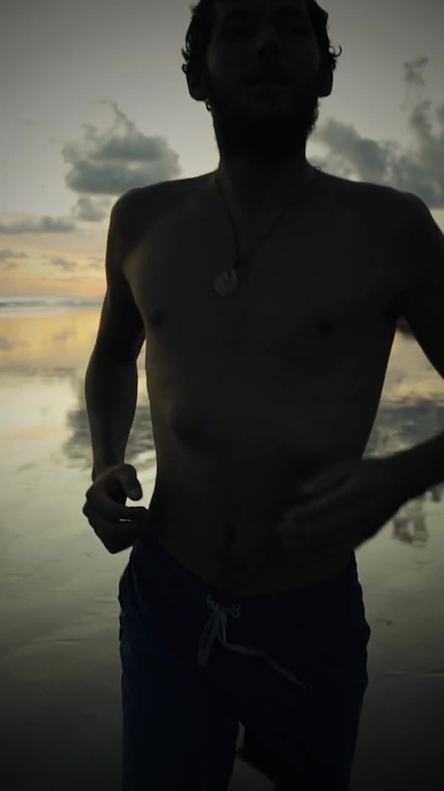
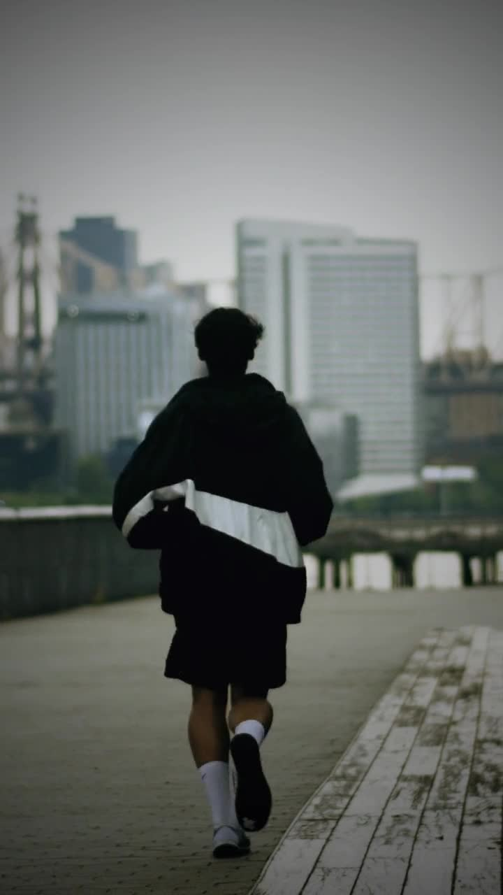
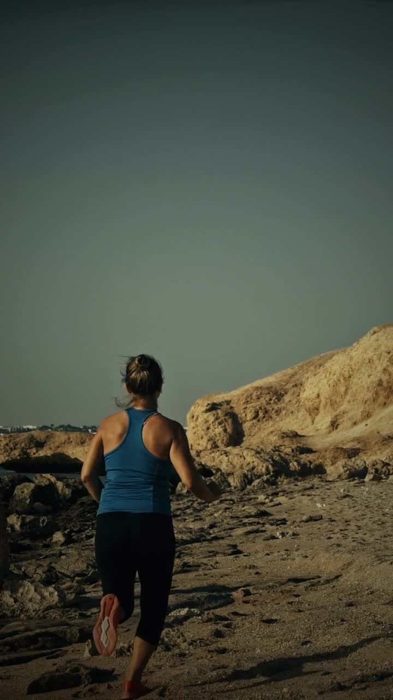
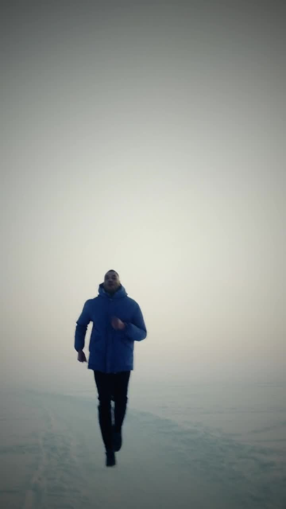
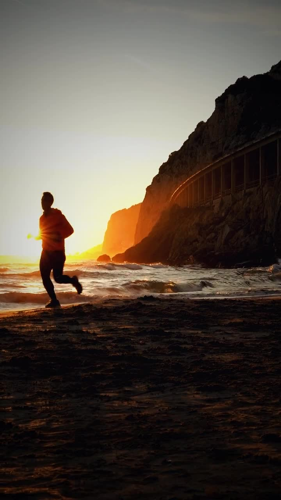

Runtrovert · A private running app
Run for
yourself.
Some days, a faster 5K. Some days, half an hour outside. Every run is yours. Track your runs, follow a plan, and come back to the routes you love. No feed. No followers. No account.
From the app New 5 km best. Saved on your phone, for you.
- Account
- Subscription
- Analytics
- Leaderboards
What kind of run do you need today?
Some days you want every number. Some days you want a little quiet. Choose what comes with you. Pause and Lap from the lock screen, pace and heart alerts, voice cues, a buzz if you leave your route, maps that work without signal, and a treadmill mode. All free, and the extras stay off until you want them.
Try it: pick one, try what happens below, then finish the run.
Recording
Nothing to look at.
Just run.
Recording
26:52time
5:29pace /km
152heart
Block 3 of 6
Steady
2:41 left
Next: Easy, 3 min
Run done.
5.21km
28:34time
5:29pace /km
38 mclimb
Splits per km Tap a bar
Negative split, 0:57 quicker on the way home.
And your energy now? Optional
Your paceHeld to the end
You held about 5:29 /km to the end, and the last kilometres were your quickest.
Quicker is higher. The first 500 m are left out.
Hills9 s /km per 1% up
Each 1% uphill cost you 9 s /km. Each 1% downhill gave back 4 s /km.
Each dot is 100 m: slope against your pace on the flat.
Stops and cornersStops 0:42 · 14 sharp corners
2 stops cost you 0:42. 0:11 of that was slowing down and getting back up to speed. 14 sharp corners cost you about 19 s.
Dots are corners, bigger costs more. Squares are stops.
HeartCatches up in 22 s
When you changed pace, your heart took about 22 seconds to follow.
Time in each heart zone, from a watch or strap.
The GPS96% within 5 m
96% of this run was within 5 metres.
From the accuracy the phone gave with each point.
ShoesBlue pair · 412 km
07:42
Sunday 2 November
 Runtrovert · Recording
Runtrovert · Recording
4.92 km · 27:00
What happens when…
A goal when you want one.
Work towards your first 5K, your next race, or a routine that fits your life. Fourteen plans, from a first run to a marathon, each one building gradually, with lighter weeks, and giving way when life does. Week 1 of every plan is free, and so are quick workouts like run 3, walk 1, and your best pace at every distance. Every run you've done stays, with every number, whenever you want to look back. Shoes keep their kilometres, a weekly goal is there if you want one, and plan sessions go to a Garmin or Coros watch as workout files. Left the phone at home? The Wear OS watch records on its own and hands the run over later.
Your best pace at each distance
5K at 4:39 /km
All timeLast 90 daysHigher is quicker

Some routes become yours.
The loop before work. The path under the trees. The long way home. Save any run as a place, give it a name, and note how it felt and how busy it was. Run the same loop three times and Runtrovert offers to keep it. Next time, "Run this again" puts your old line on the map. Saving places is free; when they're usually quiet, over months, is part of Everything, once
The loop after work
4.8 km · 9 runs · last on Sunday
Run this again
A nudge, never a guilt trip.
One or two short notes a day at most, written on your phone. No streaks, no "you missed a day", no red badges, nothing after 9 pm. Every one has a "Fewer, please" button, and "Fewer words" keeps them to the plain fact, no jokes.
Runtrovert · now
The pavement has no opinions about your pace.
Open

Yours to keep. Yours to share.
Your running history is stored on your phone. We don't receive it. No public profile, no feed, no followers. If you share a run, it goes to the person you pick, through your phone's own share sheet, and the route stays off unless you switch it on. Want someone to know? “Tell someone first” writes “back by 18:50” for you to send yourself. New phone? One backup file, kept wherever you like. The app fetches three things, each with a switch, and a fourth only if you ask for it. The line you ran is never sent.
- Plain map turns it offMap tilesOpenFreeMap sees which area is on screen. With Plain map your route still draws, just without streets.
- Weather switchThe forecastOpen-Meteo gets a location rounded to about 1 km.
- Only if you say yesThe Listen listPodcasts and playlists picked for running, opened in your own app. One list, the same for everyone, plus the covers of shows you scroll past; sponsored picks are marked.
Off until you switch it onThings you passed. After a run, Wikipedia, OpenStreetMap and Wikidata are asked what's in the squares of about 1 km the run went through. They see those squares, which outline roughly where you ran, never the line itself.
Each of these services sees your IP address, like any website. No account, no analytics, no push server. If your phone's backups are on, Android keeps a copy of the app's data in your own Google account, not with us. See exactly what stays on your phone.

Start free. Keep running free.
Record every run, keep your whole history, save your places and take your data out, all free. One optional purchase adds the long view. No subscription.
Free, always
€0
Nobody pays to be left alone, or to take their runs with them.
- Recording, and every number from every run
- All your runs, kept for as long as you like
- Your places, silent runs, quiet reminders, the map
- Listen, the Wear OS watch app, heart rate from a strap or watch
- Week 1 of every plan, and quick workouts
- Bring runs in, add a run you didn’t record, or correct one
- Your data out: every run as GPX or FIT, one at a time or all at once, and a full backup file
Everything, once
€4.99
One payment, kept by your Google Play account. Launch price; €6.99 later. No subscription, ever.
- Full training plans: every week after week 1, guided
- Trends over months: fitness, usual pace, rhythm and deep stats
- Patterns over months: when your places are usually quiet, and how runs change your energy

Run for yourself.
For a goal. For a clearer head. For the pleasure of being outside. Runtrovert is a private running app with room for your kind of run. Your run. Your space. Android first, in eight languages. iPhone after that.